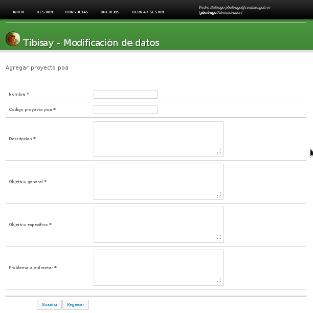
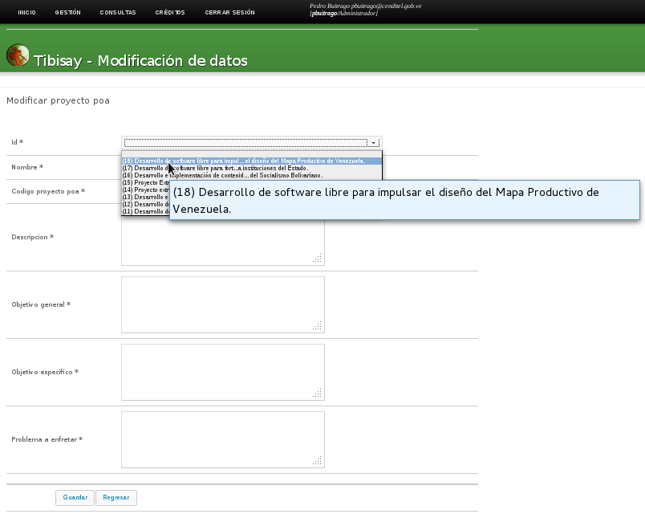
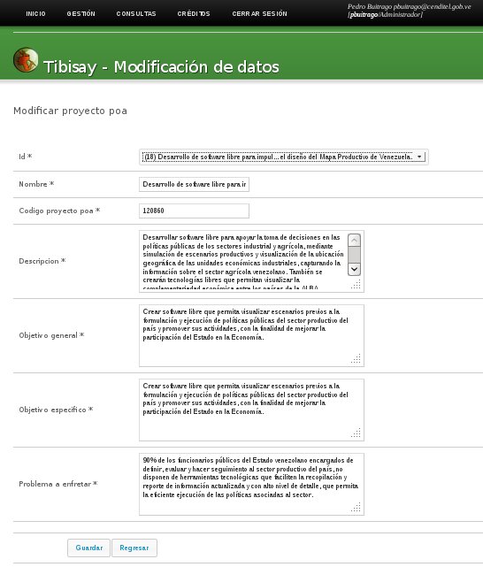

Esta acción va contener los siguientes campos:
- Campo para agregar un nuevo registro a la base de datos, este campo utiliza una sequence
- Nombre
- Codigo proyecto poa
- Descripción
- Objetivo general
- Objetivo especifico
- Problema a enfrentar
# Archivo deftrac.xml <operation name="POA" desc="Acciones del Plan Operativo Anual" icon="project.png"> </operation> <operation name="agregar_proyecto_poa" desc="Agregar un nuevo proyecto POA" icon="plus.png"> <command id ="1" type="agregar" table="proyecto_poa" > <fields> <field type="string" mandatory="yes" primarykey="yes" sequence="proyecto_poa_id_seq" title="proyecto_a_agregar"> id </field> <field type="string" icon="resumen.png" mandatory="yes" validation="" title="Nombre" desc="Nombre del Proyecto POA"> nombre </field> <field type="string" icon="resumen.png" mandatory="yes" validation="" title="Codigo_proyecto_poa" desc="codigo del proyecto POA a agregar"> codigo_proyecto </field> <field type="stringbox" icon="desc.png" mandatory="yes" options="wiki" title="Descripcion" desc="La explicación más detallada"> descripcion </field> <field type="stringbox" mandatory="yes" title="Objetivo_General" desc="Objetivo general del proyecto"> objetivo_general </field> <field type="stringbox" mandatory="yes" title="Objetivo_Especifico" desc="Objetivo especifico del proyecto"> objetivo_especifico </field> <field type="stringbox" mandatory="yes" title="problema_a_enfrentar" desc="Problema a enfrentar"> problema_a_enfrentar </field> </fields> </command> </operation>Esta acción que corresponde a unas de las operaciones de Proyectos POA, se mostraría la interfaz gráfica del sistema de la siguiente manera:

Figura 9: Interfaz gráfica para la acción, Agregar proyecto POA.
Esta acción va contener los siguientes campos:
- Identificador del proyecto en la base de datos:
- Nombre
- Codigo proyecto poa
- Descripción
- Objetivo general
- Objetivo especifico
- Problema a enfrentar
# Archivo deftrac.xml <operation name="modificar_proyecto_poa" desc="Modificar un proyecto poa existente" icon=""> <command id ="1" type="actualizar" table="proyecto_poa"> <fields> <field type="combolisttable" options="id:proyecto_poa::'(' || id || ') ' || nombre" mandatory="yes" primarykey="yes" title="id" order="desc" changekey="yes"> id </field> <field type="string" icon="resumen.png" mandatory="yes" validation=".*" title="Nombre" desc="Nombre del Proyecto POA" changefor="id"> nombre </field> <field type="string" icon="resumen.png" mandatory="yes" validation="" title="Codigo_proyecto_poa" desc="Nombre de la acción específica" changefor="id"> codigo_proyecto </field> <field type="stringbox" icon="desc.png" mandatory="yes" options="wiki" title="Descripcion" desc="La explicación más detallada" changefor="id" > descripcion </field> <field type="stringbox" mandatory="yes" title="Objetivo_General" desc="Objetivo general del proyecto" changefor="id" > objetivo_general </field> <field type="stringbox" mandatory="yes" title="Objetivo_Especifico" desc="Objetivo especifico del proyecto" changefor="id" > objetivo_especifico </field> <field type="stringbox" mandatory="yes" title="problema_a_enfretar" desc="Problema a enfrentar" changefor="id"> problema_a_enfrentar </field> </fields> </command> </operation>Esta acción que corresponde a unas de las operaciones de Proyectos POA, se mostraría la interfaz gráfica del sistema de la siguiente manera:

Figura 10: Interfaz gráfica, acción modificar proyecto POA, selección del identificador del proyecto En la figura 10 se muestra en el momento que se va a seleccionar el proyecto poa a modificar, este wiget de selección correspondería a esta parte del código.
<field type="combolisttable" options="id:proyecto_poa::'(' || id || ') ' || nombre" mandatory="yes" primarykey="yes" title="id" order="desc" changekey="yes"> id </field>En el código de la operación modificar un proyecto poa, podemos observar que el resto de los campo tomara el valor que esta almacenado en la base de datos una ves que selecciona el identificador del proyecto (changefor=”id”>). Una ves seleccionada el identificador del proyecto poa la interfaz gráfica del sistema se mostraría de la siguiente manera:

Figura 11: Interfaz gráfica, acción Modificar proyecto POA, una ves seleccionado el proyecto POA.
{kind=link}
{kind=link}
{kind=link}